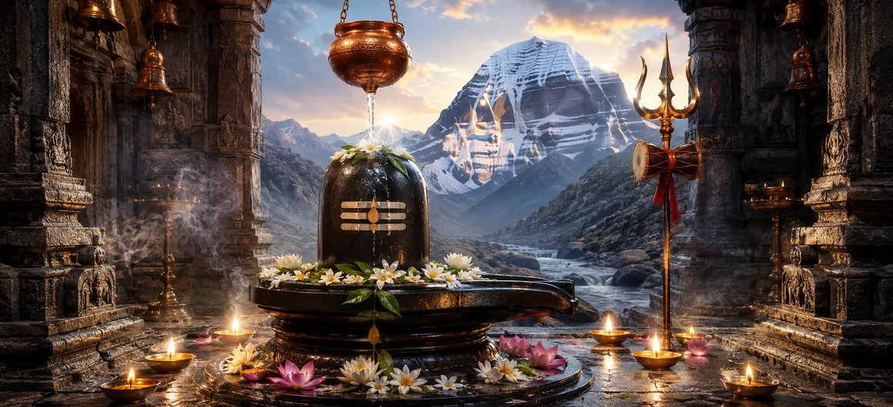

Shiva Linga
শিবলিঙ্গ
The Shiva Linga is one of the most ancient, sacred and widely worshipped symbols of Lord Shiva. Its simple form directs the mind beyond a limited human image toward Mahadeva as limitless consciousness, unchanging presence and the mystery from which creation arises and into which it returns.
In temples and home shrines, devotees approach the Linga with water, bilva leaves, flowers, mantra and silent prayer. The act of worship is not merely directed toward stone or form; the visible symbol becomes a focus through which the devotee remembers the invisible and all-pervading Shiva.
Six Sacred Dimensions of the Shiva Linga
Form of the Formless
The Linga offers a visible focus for contemplating Shiva beyond name, image and limitation.
Pillar of Light
Sacred tradition remembers Shiva as beginningless and endless radiance beyond measure.
Shiva and Shakti
The Linga with its sacred base can be contemplated as consciousness united with creative power.
Abhishekam
The ritual bathing of the Linga expresses purification, surrender, gratitude and loving reverence.
Bilva Offering
Bilva leaves are especially dear in Shiva worship and are offered with devotion and mantra.
Inner Stillness
Its quiet, centered form invites the restless mind to become steady in Shiva's presence.
Understanding the Sacred Shiva Linga
Meaning of the Shiva Linga
The Sanskrit word linga can carry the sense of a sign, mark or distinguishing symbol. The Shiva Linga is therefore approached as the sacred sign of Mahadeva—a concentrated symbol pointing beyond itself toward the immeasurable divine presence.
Its aniconic form does not attempt to describe Shiva's face or body. Instead, it leaves space for contemplation of the eternal, the unmanifest and the all-pervading. For the devotee, its simplicity holds profound depth.
The Infinite Pillar of Light
A celebrated sacred narrative describes Shiva appearing as an immeasurable pillar of fire or light. Its beginning and end could not be found, revealing a reality beyond pride, comparison and ordinary measurement. This luminous image is closely connected with the spiritual meaning of the Linga.
The story invites the seeker to become humble before the infinite. Shiva is not confined by the categories through which the limited mind tries to grasp reality.
The Unity of Shiva and Shakti
The Linga is commonly installed within a sacred base through which offerings flow. In devotional and philosophical interpretation, the complete form may be contemplated as the inseparable unity of Shiva and Shakti: still consciousness and dynamic creative power.
Creation unfolds when consciousness and power are understood together. This symbolism turns the worshipper's attention toward wholeness, balance and the sacred source of life.
Worship and Abhishekam
During abhishekam, the Shiva Linga is ritually bathed according to local and family tradition, often with clean water and sometimes with other permitted offerings. Devotees may offer bilva leaves, flowers, incense and light while repeating “Om Namah Shivaya.”
The outer offering reflects an inner prayer: may impurity be washed away, may pride soften and may the mind flow steadily toward Shiva. The sincerity of devotion is more important than display.
The Sacred Jyotirlingas
Jyotirlinga means a radiant or light-filled manifestation of Shiva. Hindu tradition especially reveres twelve principal Jyotirlinga shrines across India, each connected with distinctive sacred narratives, regional customs and generations of pilgrimage.
Pilgrimage to these shrines is a cherished path of devotion, yet Shiva's presence is not limited to famous places. A humble Linga worshipped with a pure heart can also become a powerful center of remembrance.
The Shiva Linga Within
The outer Linga gives the mind a sacred center. With steady worship, that center can be discovered inwardly as awareness, silence and the witnessing presence untouched by passing thoughts. The temple symbol thus becomes a doorway to inner meditation.
To worship the inner Shiva is to cultivate truthfulness, self-control, compassion and freedom from ego. Ritual and conduct then support one another as parts of a single spiritual journey.
What the Shiva Linga Teaches the Devotee
The Infinite
The divine cannot be confined by the limits of thought, language or physical appearance.
Humility
Before the immeasurable Shiva, pride gives way to wonder, reverence and surrender.
Purification
Abhishekam encourages the devotee to cleanse intention as carefully as the sacred form.
Balance
Shiva and Shakti remind us that still awareness and purposeful action belong together.
Concentration
The centered form and Nandi's steady gaze teach undistracted devotion.
Sincere Devotion
A simple offering made with a pure heart can carry profound spiritual meaning.
“May the sight of the Shiva Linga steady our minds, purify our intentions and awaken the silent presence of Mahadeva within our hearts.”
Frequently Asked Questions
What does the Shiva Linga represent?
The Shiva Linga is the sacred symbolic form of Lord Shiva. It is widely contemplated as a sign of the formless divine, pure consciousness, cosmic creation and the presence of Mahadeva beyond limited physical form.
Why is abhishekam offered to the Shiva Linga?
Abhishekam is a devotional bathing ritual offered according to tradition. It expresses reverence, purification, surrender and the cooling of the restless mind.
What is a Jyotirlinga?
A Jyotirlinga is a revered manifestation of Shiva associated with divine light. Hindu tradition especially honors twelve principal Jyotirlinga shrines in India.
Why does Nandi face the Shiva Linga?
Nandi is Shiva's devoted bull and vahana. His steady position facing the Linga symbolizes focused attention, loyalty, patience and unwavering devotion to Mahadeva.